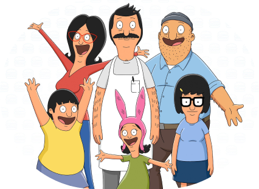

Bob Belcher is a third-generation restaurateur who runs Bob's Burgers with his loving wife and their three children. Bob believes his burgers speak for themselves and isn't afraid to offer a variety of off beat creations (like the ones you will find here). Bob's wife, Linda, supports his dream but is becoming sick of the slow times, as the restaurant is constantly in danger of going out of business. The main competition to Bob's Burgers is a busy pasta joint located across the street that is run by bob's nemesis, Jimmy pesto. Despite the challenges, which includes consistent harassments from Linda's ex-a health inspector - Bob tries to keep the grill sizzling both literally and metaphorically.
